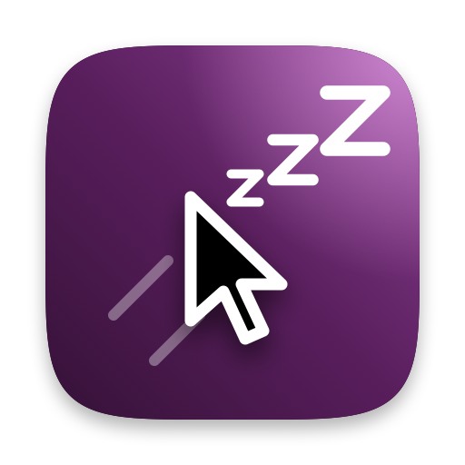

NapCorner
The Put Display to Sleep hot corner, except it waits until you mean it, and doesn't wake up the moment you bump the mouse.
What it does
-
Waits until you mean it
Rest the pointer in the corner for a moment, or push the mouse into it. Flicking past the corner on the way to a menu doesn't count.
-
Stays asleep
Choose how long mouse bumps are ignored, or set the slider to Infinite to ignore them until a key press or click. A key press or a click always wakes it.
-
Shows you where it's at
A little pill springs out of the corner and types “Sleeping … zzzZ” as it fills. The trackpad taps once when it commits.
-
Your corners, your timing
Pick any corners, how long to hold, how firm a push, and how long to ignore the mouse.
-
No permissions
No Accessibility or other access to grant. It offers to turn off macOS's own hot corner so the two don't both fire.
-
Private
No analytics. The only thing it fetches is its own update check.
First launch
- Open
NapCorner.dmgand drag NapCorner into Applications. - NapCorner isn't notarized by Apple, so macOS blocks the first launch. Go to System Settings → Privacy & Security and click Open Anyway.
- A short welcome asks which corners to use and whether to open NapCorner at login.